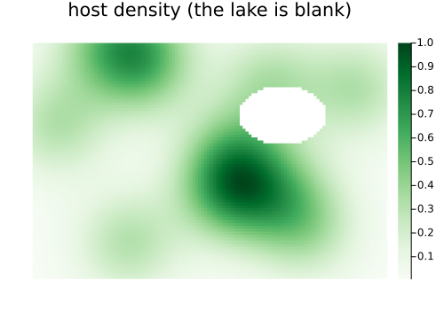
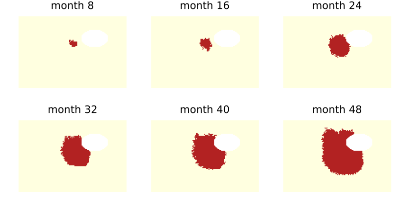
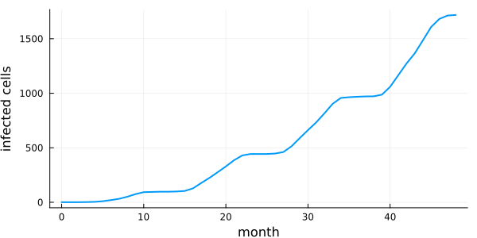

Landscapes from rasters
Simon Frost
- Overview
- A land-cover raster
- Space, mask and covariate
- A climate stack
- A seasonal disease on the landscape
- Writing the result
- Summary
Overview
Real landscapes come as rasters: land cover as a GeoTIFF, climate as a NetCDF stack with a time axis. With Rasters.jl loaded, CellularAutomataCore turns a raster into a space, a mask of the cells that hold data, and covariate layers, and writes states back as rasters. This vignette builds a small landscape, writes it to disk in both formats, reads it back, runs a seasonal disease on it, and saves the result as a GeoTIFF.
ENV["GKSwstype"] = "100"
using CellularAutomataCore
using Rasters, ArchGDAL, NCDatasets
using Plots
using Random
using StatisticsRasters reads GeoTIFF through ArchGDAL and NetCDF through NCDatasets; loading them enables those formats.
A land-cover raster
A 120 × 80 landscape of 100 m cells in UTM zone 17N: a host crop whose density varies smoothly, with a lake where there is no data. The raster’s missing value marks the lake.
x = X(500_050.0:100.0:511_950.0)
y = Y(4_007_950.0:-100.0:4_000_050.0)
utm = EPSG(32617)
rng = Xoshiro(1)
centres = [(rand(rng, 1:120), rand(rng, 1:80)) for _ in 1:12]
host = [mean(exp(-((i - a)^2 + (j - b)^2) / 300) for (a, b) in centres) for i in 1:120, j in 1:80]
host ./= maximum(host)
lake = [(i - 85)^2 / 15^2 + (j - 25)^2 / 10^2 < 1 for i in 1:120, j in 1:80]
host[lake] .= -9999.0
landcover = Raster(host, (x, y); crs=utm, missingval=-9999.0, name=:host)
path = joinpath(mktempdir(), "host.tif")
write(path, landcover)"/var/folders/yh/30rj513j6mn1n7x556c2v4w80000gn/T/jl_vgsJWo/host.tif"Reading the file back gives a raster backed by the file. The X and Y dimensions keep their coordinates and projection, and the file’s missing value is read as missing:
r = Raster(path)
(dims=size(r), crs=convert(EPSG, crs(r)), missingval=missingval(r))(dims = (120, 80), crs = EPSG{1}((32617,)), missingval = missing)Space, mask and covariate
raster_space gives a lattice the size of the raster’s X and Y dimensions, with nothing beyond its edges. raster_mask marks the cells holding data, and raster_covariate turns the values into a covariate, with a fill for the missing cells:
space = raster_space(r)
mask = raster_mask(r)
density = raster_covariate(r; missing_as=0)
(space=space, cells_with_data=count(mask), lake_cells=count(!, mask))(space = Grid((120, 80); boundary=(Constant{Int64}(0), Constant{Int64}(0))), cells_with_data = 9145, lake_cells = 455)heatmap(ifelse.(mask, density, NaN)'; yflip=true, aspect_ratio=:equal, c=:Greens,
framestyle=:none, title="host density (the lake is blank)", size=(500, 360))
The lattice’s first axis is the raster’s X and its second Y, whatever order the file stores them in. Cell (i, j) of a state is the raster’s cell at X = i, Y = j.
A climate stack
A monthly temperature stack with a time dimension, as NetCDF. It is warmest in July and a little warmer in the south:
months = Ti(1:12)
temp = [18 + 8 * sin(2π * (m - 4) / 12) + 2 * (1 - j / 80) for i in 1:120, j in 1:80, m in 1:12]
climate = Raster(temp, (x, y, months); crs=utm, name=:temperature)
ncpath = joinpath(mktempdir(), "temperature.nc")
write(ncpath, climate)
temperature = raster_covariate(Raster(ncpath))
size(temperature)(120, 80, 12)A covariate with one more axis than the space is read at slice mod1(t + 1, 12) in the step from time t, so it cycles through the months.
A seasonal disease on the landscape
A susceptible–infected model in monthly steps. A susceptible cell is infected with probability that rises with the host density and the number of infected neighbours, scaled by a temperature suitability that peaks at 24 °C. The lake cells are masked, so they never change and do not carry the disease:
model = @camodel Seasonal begin
@states state::Int8 = 0 ∈ (0, 1)
@parameters β = 0.9 optimum = 24.0 width = 6.0
@neighbourhood Moore(1)
@covariates density temperature
@rule begin
cell == 1 && return Int8(1)
k = count(==(1), nbrs)
suit = exp(-((covariate(ctx, :temperature) - optimum) / width)^2)
pinf = 1 - (1 - β * covariate(ctx, :density) * suit)^k
Int8(bernoulli(ctx, pinf, 1))
end
end
start = zeros(Int8, 120, 80)
start[60, 30] = 1
prob = CAProblem(model, (; state=start), 48; space, mask, seed=4,
covariates=(; density, temperature))
sol = solve(prob; saveat=8)
plot([heatmap(ifelse.(mask, Float64.(u), NaN)'; c=[:lightyellow, :firebrick], clims=(0, 1),
aspect_ratio=:equal, framestyle=:none, colorbar=false, title="month $t", yflip=true)
for (t, u) in zip(sol.t[2:end], sol.u[2:end])]...; layout=(2, 3), size=(800, 420))
The maps are drawn with Y pointing south, as the raster’s coordinates do. The lake cells are blank: masked, they never update, and the infection spreads around the lake rather than across it.
infected = [count(==(1), u) for u in solve(prob).u]
plot(0:48, infected; lw=2, legend=false, xlabel="month", ylabel="infected cells",
size=(600, 300))
The number infected climbs in the warm months and stays flat in winter, when the temperature covariate makes infection unlikely.
Writing the result
state_raster puts a state back on the raster’s grid, with its coordinates and projection. A mask turns the cells outside it into the missing value, and the result can be written as a GeoTIFF:
final = state_raster(sol.u[end], r; mask, missingval=Int8(-1))
outpath = joinpath(mktempdir(), "infected.tif")
write(outpath, final)
back = Raster(outpath)
(same_values=raster_covariate(back; missing_as=-1, T=Int8) == parent(final),
crs=convert(EPSG, crs(back)), x_matches=lookup(back, X) == lookup(r, X))(same_values = true, crs = EPSG{1}((32617,)), x_matches = true)A layered state becomes a RasterStack, one layer per state variable, ready for NetCDF.
Summary
| Function | Gives |
|---|---|
raster_space(r) | a Grid of the raster’s X × Y size |
raster_mask(r) | the cells that hold data |
raster_covariate(r) | a covariate layer, with time last for a Ti dimension |
state_raster(u, r) | a Raster (or RasterStack) on the raster’s grid |